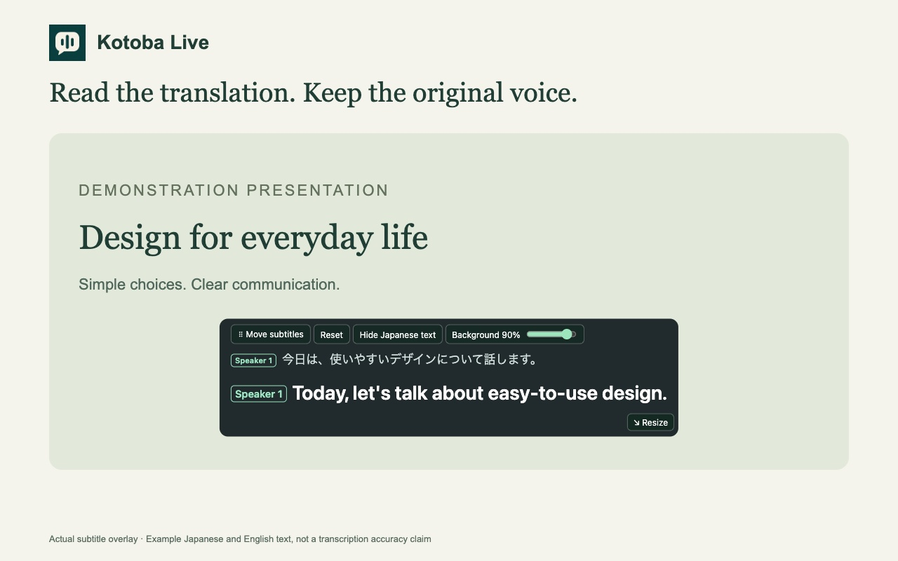

JAPANESE, A LITTLE CLOSER.
Keep the voice.Follow the meaning.
Live Japanese subtitles.
Right where you watch.
ことば
01 — 04
Listen in Japanese. Read along.
日本語 → ENGLISH
A little time for languageJAPANESE AUDIO
A DAILY LISTENING PRACTICE
Listen to
what you love.
what you love.
Small moments. Meaningful progress.
01今日は外国語の勉強について話します。
Today I’ll talk about studying foreign languages.
01毎日10分でも、好きな内容を聞き続けることが大切です。
Even if it’s only 10 minutes a day, it’s important to keep listening to what you like.
01分からない言葉があったら、一度止めて、もう一度聞いてみましょう。
If there’s a word you don’t understand, pause once, and try listening again.
Original synthetic audio sample · Illustrative subtitle timing
02 — 04
Your subtitles.Your space.
01Move freely
02Resize the frame
03Choose your language

Actual subtitle interface · Illustrative example text
03 — 04
Japanese,a little closer.
kotoba.uk
Try 20 minutes free↗
No credit card needed
ことば